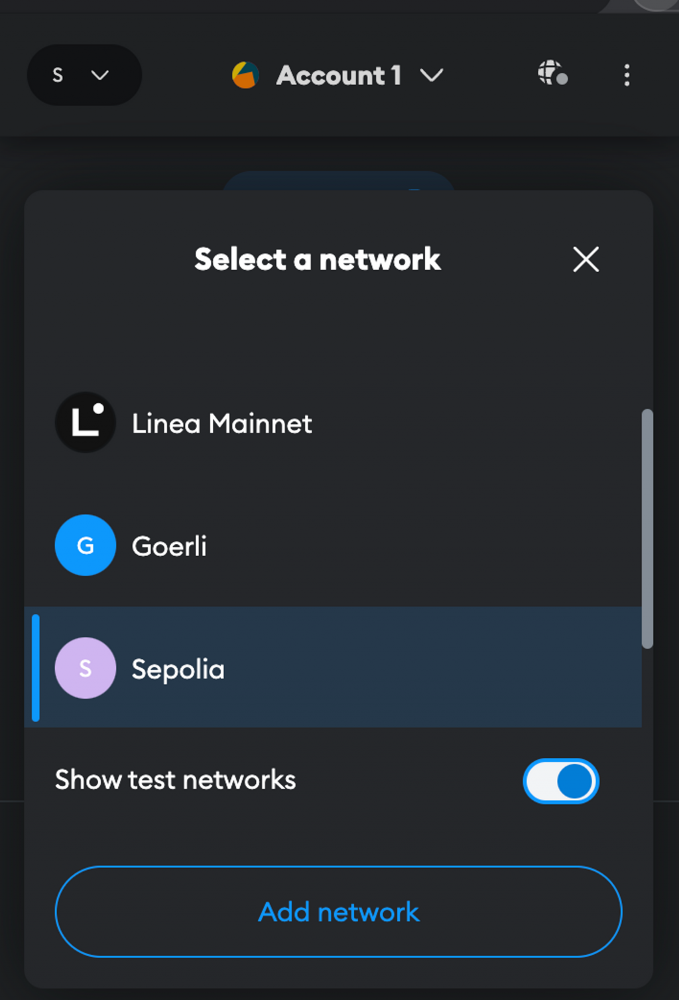
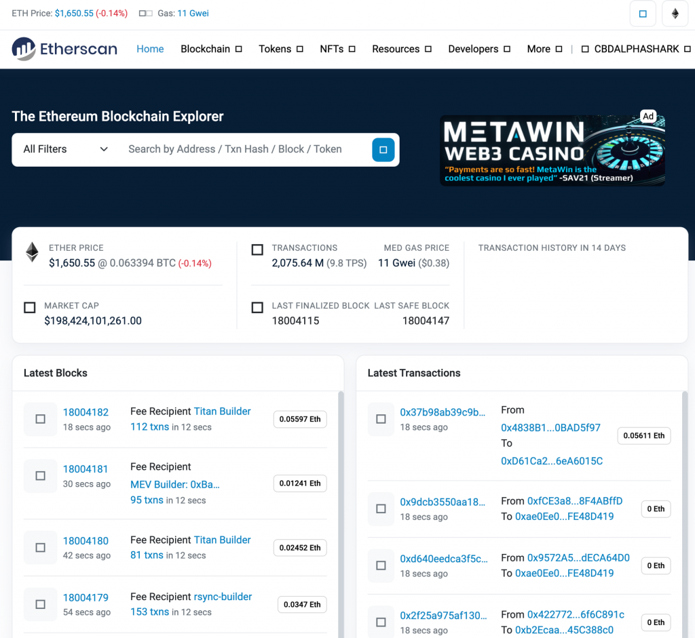
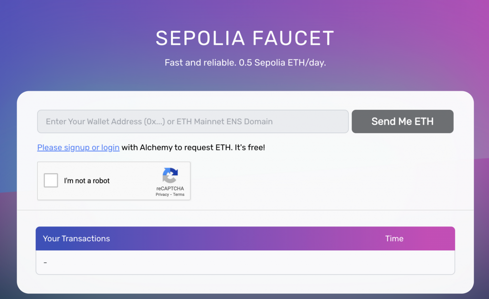
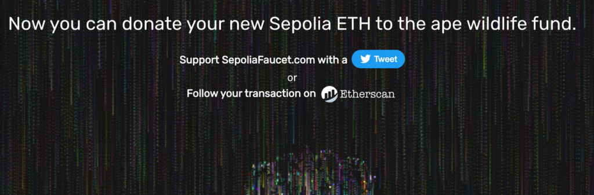
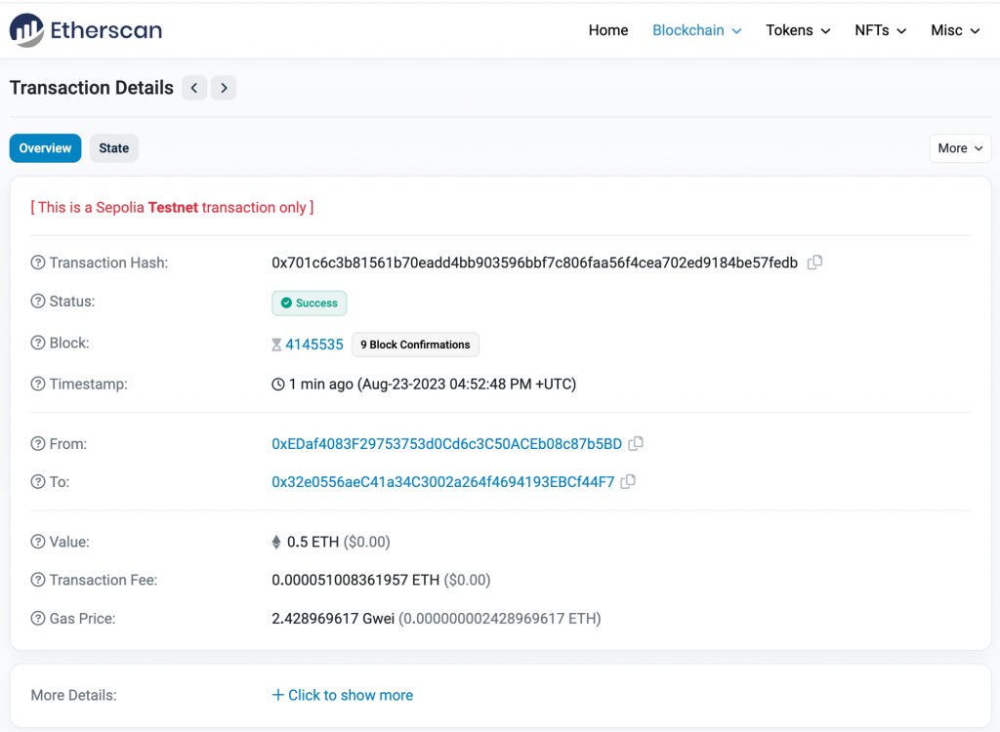
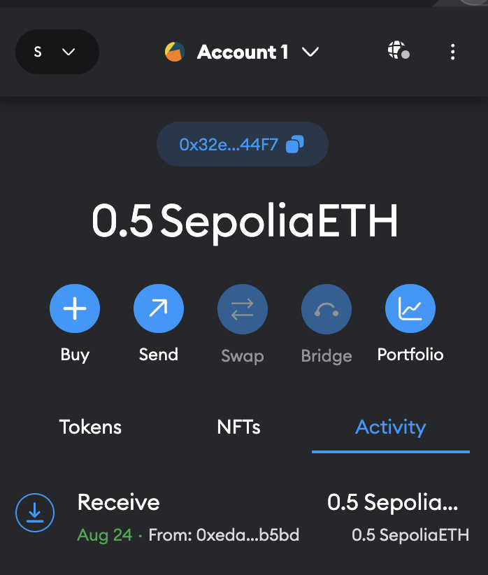
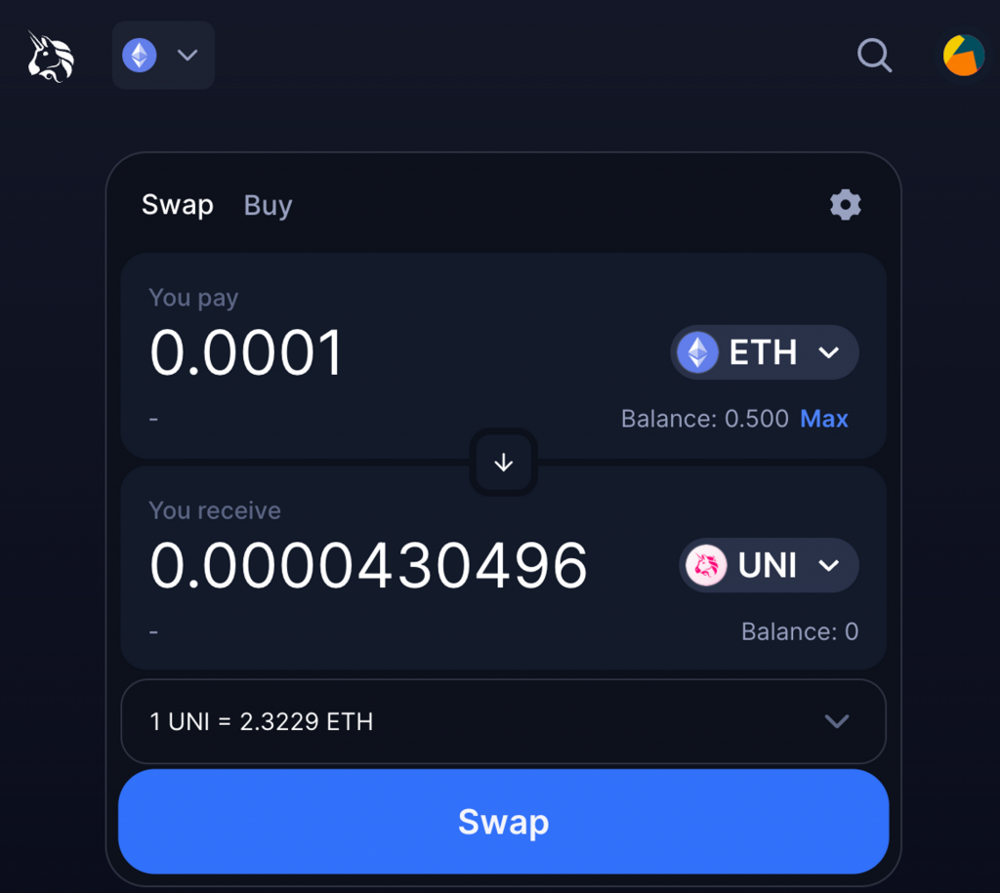
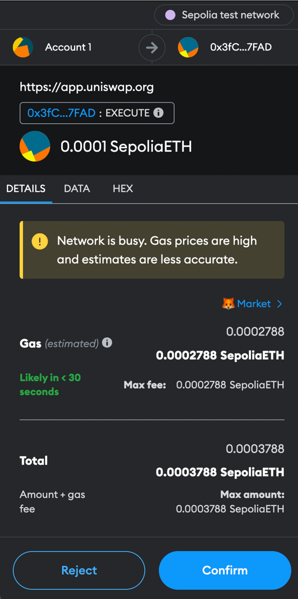
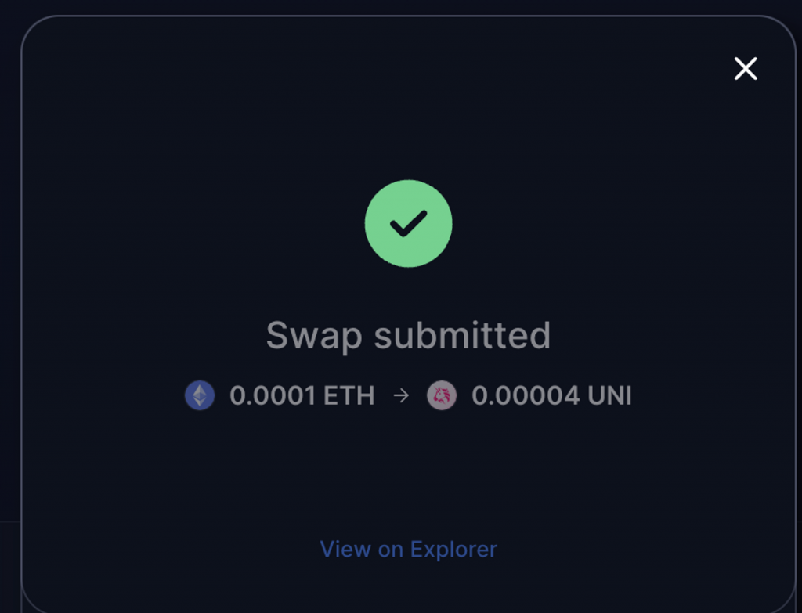
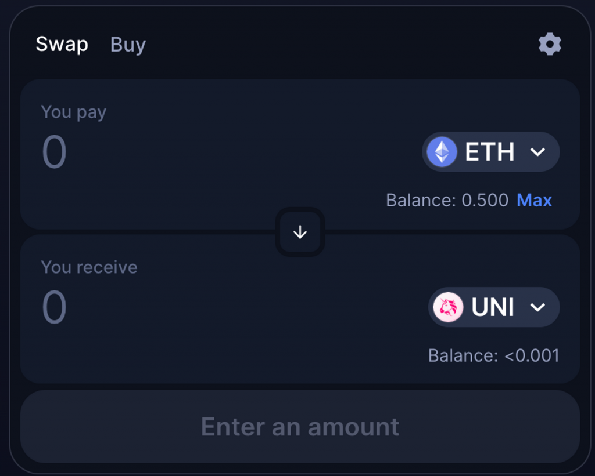

今天我們會講解主網跟測試網的區別，並帶大家領取測試網上的代幣，來實際操作一個區塊鏈應用。
在區塊鏈的世界中，我們有兩種不同的網絡：主網 (Mainnet) 和測試網 (Testnet)。主網是真正的金融交易發生的地方，如各種 DeFi 和 NFT 活動。而所有在主網上的代幣（如以太幣 ETH），都是真實有價的代幣。
相對於主網，測試網是為開發者提供的環境，用於測試智能合約和應用程序。因為如果每次測試智能合約都要部署到主網，就會花一筆費用，尤其在以太坊這種手續費較高的鏈上更是成本高昂，因此才會需要有測試鏈，讓開發者不需要花費真正的資金。
以太坊目前的主要測試網是 Sepolia ，在 Metamask 中可以方便地切換主網和測試網，只要先點擊左上角的切換網路按鈕，並開啟「Show test networks」後選擇 Sepolia，就可以成功切換到 Sepolia 測試鏈了。

值得注意的是在 Metamask 中不管切換到哪條鏈，對應的錢包地址都不會改變，這是因為這些鏈都跟以太坊的底層機制相容，他們的許多邏輯（如產生錢包、簽名交易等等）跟以太坊都是相同的，因此會把他們稱為 EVM Compatible 的鏈（EVM 指的是 Ethereum Virtual Machine，可以想像成運行以太坊帳本的虛擬機）。之後我們也會看到更多的 EVM Compatible 的鏈。
由於 Metamask 錢包中只能看到自己錢包地址的餘額與交易紀錄，但大家常會聽到說區塊鏈的帳本是公開透明、任何人都可以查詢的，那要怎麼看其他錢包地址的交易紀錄呢？這就要提到區塊鏈的「瀏覽器」（或稱為 Explorer ），不過這個瀏覽器跟我們平常聽到的瀏覽器概念不太一樣，他不是用來瀏覽網頁的，而是用來查詢區塊鏈上的任何資料。對於以太坊主網，最常用的 Explorer 是 Etherscan。你可以使用它來查看以太坊上所有的交易、地址餘額和區塊資訊。點進去可以看到許多關於以太坊網路最即時的資訊（如交易量、最新的區塊以及交易紀錄、手續費多高等等）

每條區塊鏈通常都會有對應的 Explorer，這樣才能方便大家查詢自己發出的交易的狀態，而不需要自己打 API 查詢。所以像 Sepolia 測試網也有他對應的 Explorer：Sepolia Etherscan ，或是像 Polygon 這條 EVM Compatible 的鏈也有對應的 Explorer：Polygonscan
| Explorer URL | |
|---|---|
| Ethereum | http://etherscan.io/ |
| Polygon | http://polygonscan.com/ |
| BNB Chain | https://bscscan.com/ |
| Arbitrum | https://arbiscan.io/ |
| Optimism | https://optimistic.etherscan.io/ |
由於測試網上的代幣不具有真實價值，開發者可以透過水龍頭服務（Faucet）免費獲得它們。這些 Faucet 服務通常會要求進行一些基本驗證，例如通過 Twitter 或 Email，就會發放一定數量的測試代幣到指定的地址。
很多 Faucet 常常會被領到乾掉，所以有時需要多搜尋一下才能找到還能用的。Sepolia 官方的 Github repo 內有幾個連結，其中一個實際可用的是 Alchemy 這間公司維護的 Sepolia Faucet，只要註冊 Alchemy 的帳號就可以領取測試幣。後續的文章也會用到 Alchemy 的服務，所以可以先註冊起來。接下來我們實際用它來領取 Sepolia 鏈上的原生代幣 ETH。
首先我們到 Sepolia Faucet 網站，點擊註冊或登入 Alchemy

按照指示創立完帳號並登入後，就可以輸入地址領取 Sepolia 鏈上的測試用 ETH 了。這邊要輸入的地址是 Metamask 內的「Account 1」下方可以找到。點擊 Send Me ETH 送出後就可以看到成功的訊息

如果點擊進去上方 Etherscan 的連結，可以看到長得像這樣的頁面，而這就是上面提到的區塊鏈瀏覽器。剛才從 Alchemy 轉移測試用 ETH 給我的這筆交易已經成功上鏈，他對應的交易就是這一筆，可以看到 To 的那欄就會是剛才輸入的錢包地址，他打了 0.5 ETH 給我。

這時再回到 Metamask 中，就可以看到錢包已經收到 Sepolia 的 ETH 了！

接下來我們會實際在測試鏈上操作一次區塊鏈上的應用，使用的是 Uniswap 這個 DeFi 應用，他是最廣為人知的做代幣交易的去中心化交易所，可以在上面買賣各種代幣，這類交易所就是 Decentralized Exchange（簡稱 DEX）。有別於中心化交易所的掛單簿形式（也就是我可以指定要掛買單或賣單後等待他成交），目前主流的去中心化交易所都是採取「Swap」（兌換）的機制，也就是只要指定我想從哪個幣換到哪個幣、換多少量，這時交易所就會提供一個報價，只要使用者接受這個報價就可以直接交易。最近 Uniswap 即將要推出 V4 的協議，加入了限價單的機制，也許未來會成為主流。
可以前往 Uniswap 體驗實際的操作，點擊右上角的 Connect 按鈕並選擇 Metamask 就可以連接上錢包了，因為我們剛剛已經在 Metamask 中切換到 Sepolia 鏈，所以 Uniswap 會自動偵測現在我在使用的是 Sepolia 鏈。而在測試網能選擇的幣別比較少，這裡我們選擇從 ETH 兌換成 UNI 這個 Uniswap 服務自己發行的代幣，並輸入一個比較小的數字作為測試

點擊 Swap 並按下確認後，Uniswap 就會跟 Metamask 請求錢包操作，並跳出一個 Metamask 的視窗要求你確認交易，裡面會顯示交易的細節、要執行的操作以及會花多少手續費（Gas Fee）

按下確認後交易就成功被送出了，一樣可以點擊 View on Explorer 會連到 Sepolia Etherscan 上的這筆交易，等個幾秒交易成功後，就會在 Uniswap 的介面上看到帳戶餘額的變化。這樣就完成我們第一次的 DApp 操作了！


今天我們了解了主網跟測試網的差異，並實際操作一次測試網上的應用，這樣的基礎知識就已經足夠進入前端的開發了。接下來幾天我們會開始介紹如何開發基本的 DApp 前端應用，以及如何跟區塊鏈互動。